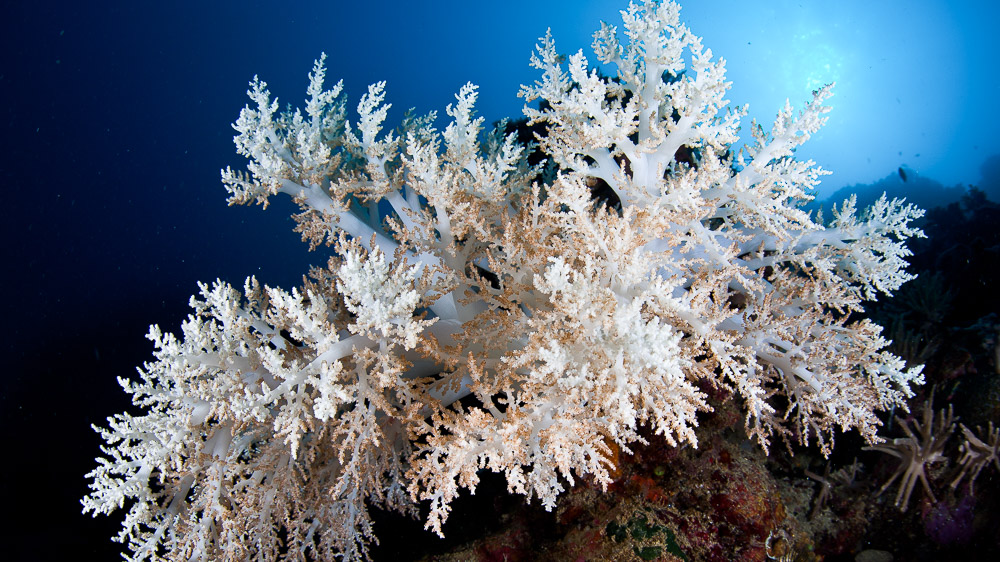

Gulf Coast corals face catastrophe
aperture':'0','credit':'','camera':'','caption':'','created_timestamp':'0','copyright':'','focal_length':'0','iso':'0','shutter_speed':'0','title':'','orientation':'0'}' data-image-title='frontiers-marine-science-bleached-coral-gulf-mexico' data-large-file='https://frontiersinblog.files.wordpress.com/2019/12/frontiers-marine-science-bleached-coral-gulf-mexico.jpg?w=940' data-medium-file='https://frontiersinblog.files.wordpress.com/2019/12/frontiers-marine-science-bleached-coral-gulf-mexico.jpg?w=300' data-orig-file='https://frontiersinblog.files.wordpress.com/2019/12/frontiers-marine-science-bleached-coral-gulf-mexico.jpg' data-orig-size='1000,562' data-permalink='https://blog.frontiersin.org/frontiers-marine-science-bleached-coral-gulf-mexico/' sizes='(max-width: 1000px) 100vw, 1000px' src='https://frontiersinblog.files.wordpress.com/2019/12/frontiers-marine-science-bleached-coral-gulf-mexico.jpg' srcset='https://frontiersinblog.files.wordpress.com/2019/12/frontiers-marine-science-bleached-coral-gulf-mexico.jpg 1000w, https://frontiersinblog.files.wordpress.com/2019/12/frontiers-marine-science-bleached-coral-gulf-mexico.jpg?w=150 150w, https://frontiersinblog.files.wordpress.com/2019/12/frontiers-marine-science-bleached-coral-gulf-mexico.jpg?w=300 300w, https://frontiersinblog.files.wordpress.com/2019/12/frontiers-marine-science-bleached-coral-gulf-mexico.jpg?w=768 768w'>
Posted On: 2019-12-09T00:00:00
Posted By: Rice University

Content Date: 2019-12-09
Download Date: 2021-07-10
Document ID: L0C04F6IL